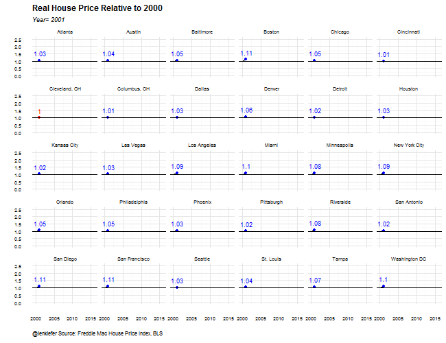
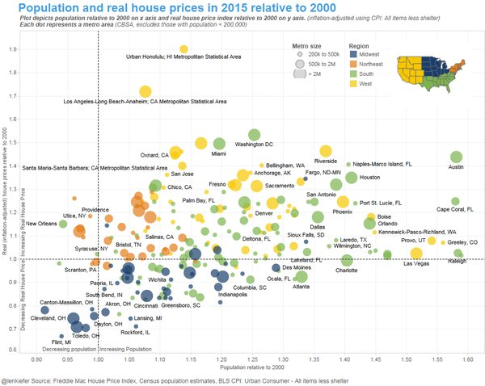
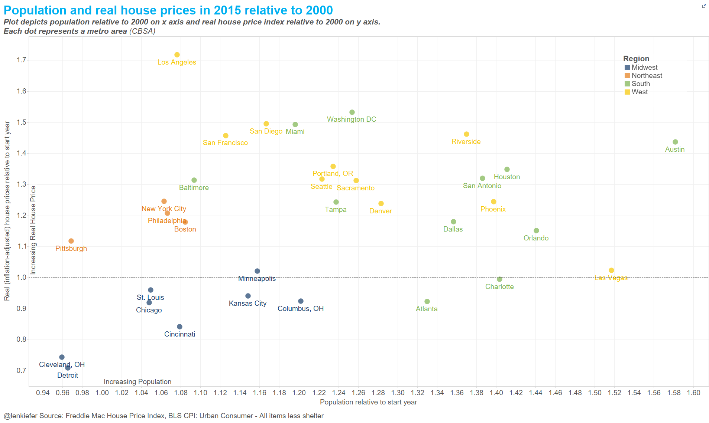
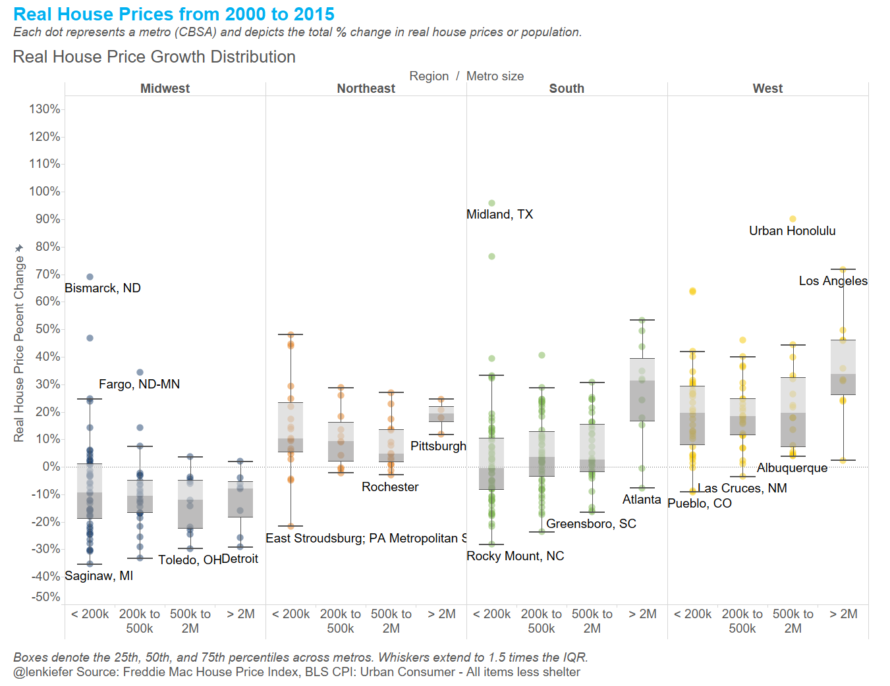
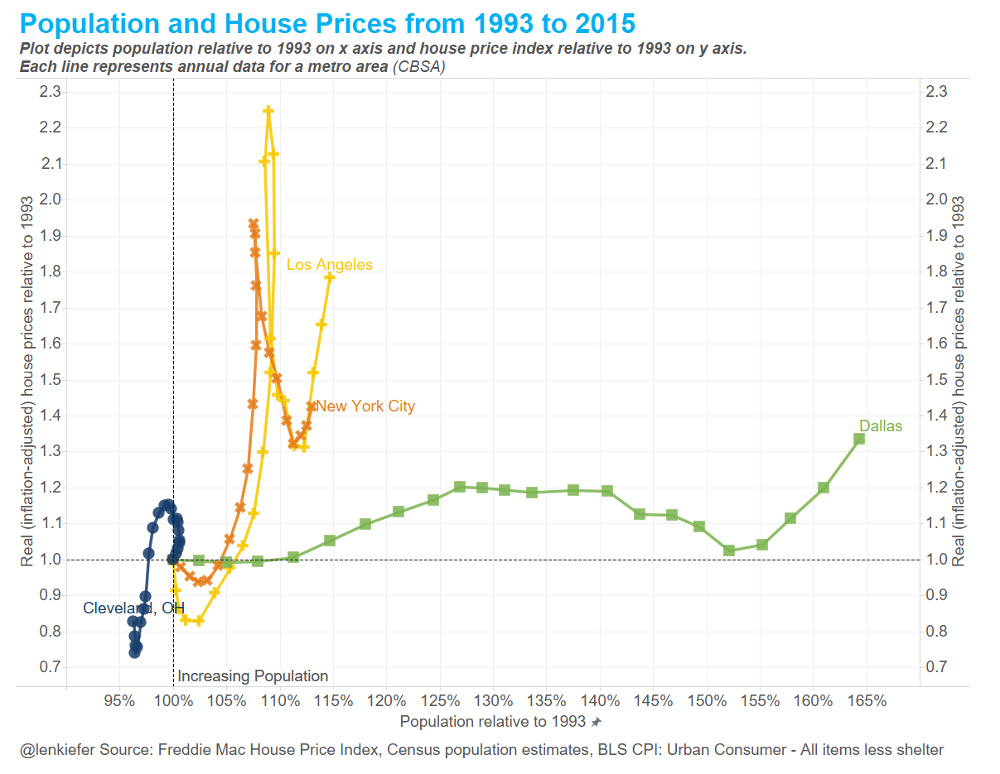
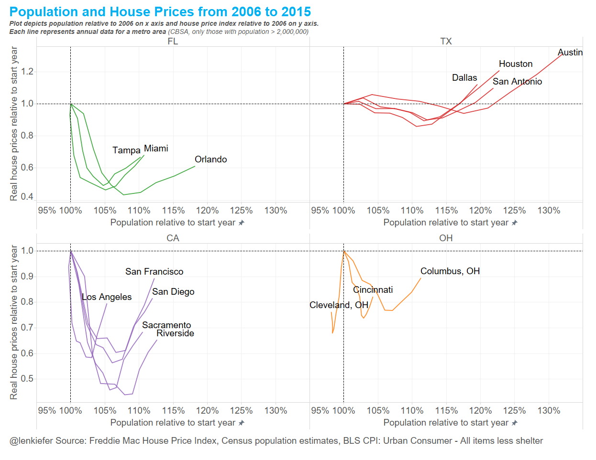
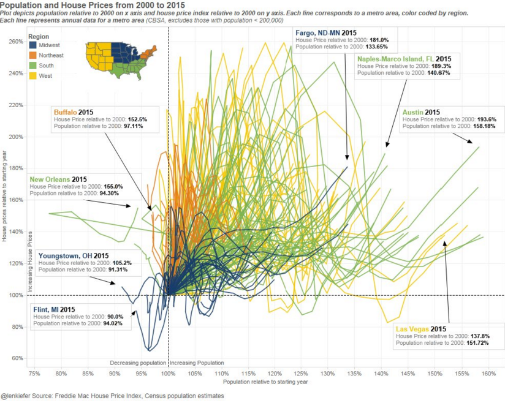

EARLIER THIS WEEK the U.S. Census Bureau released updated population figures for 2015. These data revealed changes in population across the country. Jed Kolko published a nice summary of these data, and it got me thinking about the relationship of population growth rates and house prices. In this post I want to consider a few key things I found by exploring these data.
First, let’s have a look at the history of real house prices, relative to the year 2000 for 30 large metro areas:

This chart shows the rise and fall and recovery of house prices in the largest metro areas. We see that many markets have real house prices above their 2000 level, but few are above their pre-recession peaks.
How do trends in real house prices correlate with population growth?

In this chart each bubble corresponds to a metro area. Along the x axis we have population growth and the y axis displays real house prices. Each metro is normalized so that population and house prices equal one in 2000. Moving to the right corresponds to faster population growth. Moving up corresponds to faster real house price growth. What’s going on with this chart? Let’s break it down.
Some maps
This map shows metro level population growth from 2000 to 2015.

Most metros have had positive (green) population growth. The strongest growth has been in the West and South. Metros in the Midwest have had weaker growth, with several actually experiencing population declines (red).
Next we chart real house price growth from 2000 to 2015 by metro area.

This map shows many of the same patterns as the population map. Real house price growth has been strongest in the West and South. Real house prices have actually declined in many midwestern metro areas and southern cities outside of Florida and Texas.
Scatterplots
Between these two maps there is a lot going on, so let’s just focus on the largest metro areas, those with populations over 2 million. The scatterplot below compares the real house price index (with the year 2000 normalized to 1) compared against population (with the year 2000 normalized to 1) for the largest metro areas in 2015.
Dots in the upper right quadrant have seen positive real house price appreciation and population growth since 2000. Pittsburgh, in the upper left quadrant has seen positive real house price appreciation but population loss since 2000. Cleveland and Detroit in the bottom left quadrant have seen real house prices and population decline. Finally, those in the lower right quadrant have had population growth since 2000, but have seen their real house prices decline.

The metros are color coded by U.S. Census regions. The West is yellow, the South is green, the Northeast is orange and the Midwest is blue. Lots of green and yellow in the upper right, and a lot of blue in the lower left.
At the far right of the chart we have Austin, Texas. Austin’s population has grown over 58 percent from 2000 to 2015 and real house prices are up over 50 percent during that time. Contrast that with Detroit in the lower left corner. Detroit’s population has shrunk by about 3 percent since 2000 and real house prices have fallen by nearly 30 percent.
Boxplots!
Now we’re starting to see a pattern. The following boxplots help to clarify what we’re seeing. Boxplots are statistical graphics that help us characterize the distribution of data. In the following plots, each dot measures a single metro area. The box, shaded in gray, will show the points that lie between the 25th and 75th percentiles, while the whiskers show the range out to 1.5 times the distance between the 25th and 75th percentile. Values beyond the whiskers are outliers.

This is a panel boxplot which shows real house prices broken down by metro size and region. Each figure depicts the change in real house prices/population relative to the year 2000 in 2015. A value of 0 means real house prices or population is exactly what it was in 2000, while a value of 0.5 (-0.5) means that real house prices or population is 1.5 (0.5) times what it was in 2000. I’ve broken the data out by region and metro size. Metro size corresponds to population in the year 2015. The largest metros, those with population greater than 2 million, tend to have the greatest house price appreciation (outside of the Midwest). Metros in the West regardless of size have tended to experience faster real house price appreciation.
A more complicated chart!
I constructed an even more complicated chart that allows me to trace out the history of real house prices and population for each metro area from 1993 to 2015. Consider this beauty:

This chart tells the house price/population story for four large metro areas: Cleveland, Ohio, New York, Los Angeles, and Dallas. Like before each point corresponds to real house prices and population relative to a starting year (this time 1993). But in this chart each individual point corresponds to one year from 1993 to 2015. All the points start at an origin of 1⁄1, and then trace out that metro’s fortune over the subsequent years.
For Dallas we see a slow and steady rise in house prices and population with a bit of a blip around the Great Recession. For New York and Los Angeles, we see the meteoric rise in house prices, collapse and recovery. In Cleveland we see a gradual decline in population and a slow downward drift in real house prices.
Now that we’ve walked through that chart, we can consider this one that compares more metros from four large states:

From this chart we can see that Texas has done very well in terms of house prices and population growth. Florida metros are recovering, but slower than those out west in California. Ohio metros continue to languish, though Cincinnati and Columbus are faring better than Cleveland.
We’ve come this far, why don’t we go ahead and put all metros on one plot? This graph I affectionately call the “hairball”:

The hairball is like an impressionistic painting. You just squint at it and let it roll over you. But you might be able to get more out of it by considering the interactive version below. In it, you can hover for more details, an use some dropdowns to filter the data.
Check it out:

{% include JB/setup %}